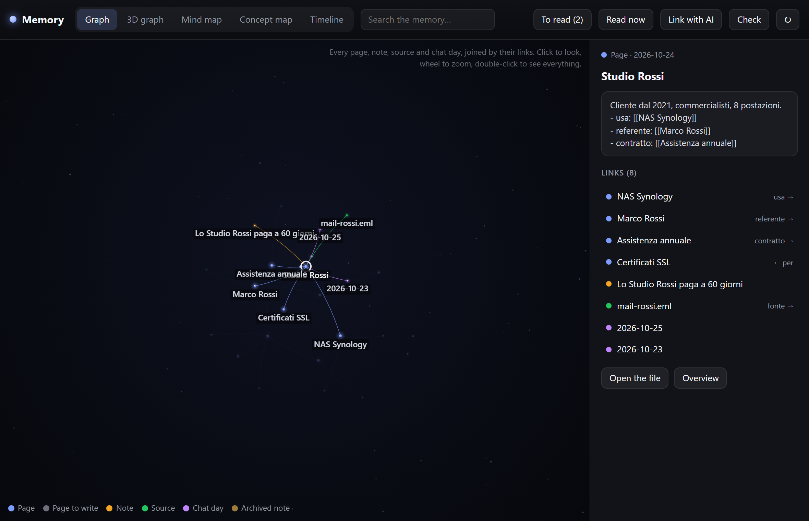
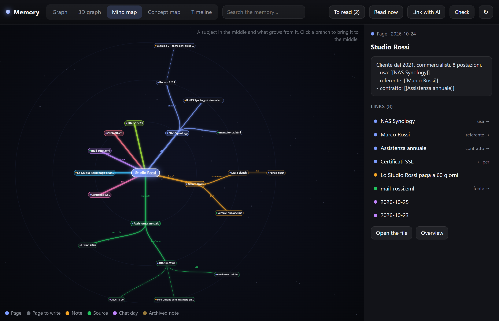
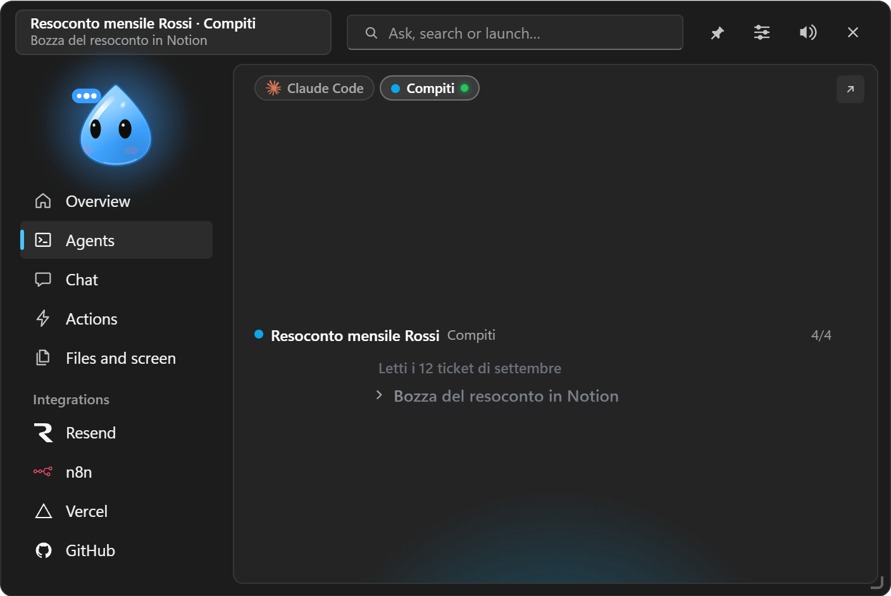
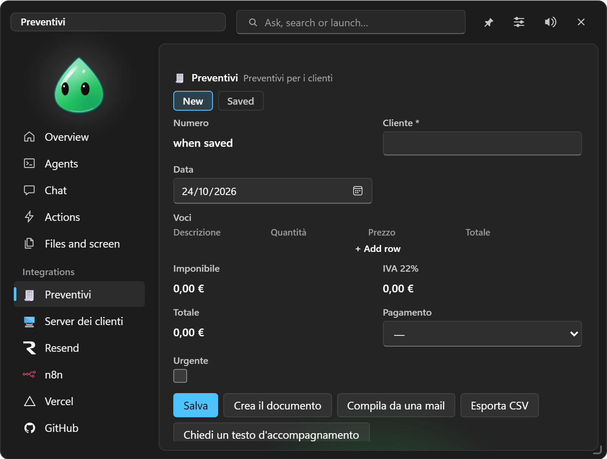
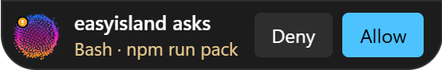
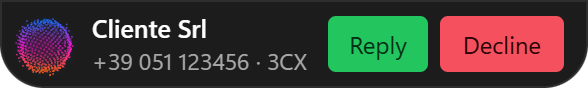
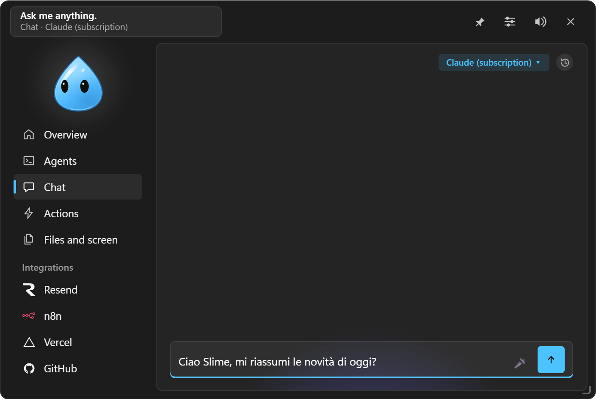
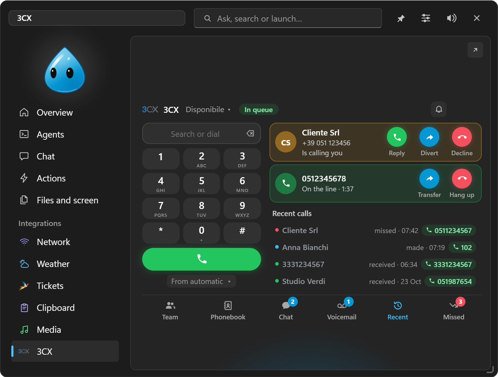
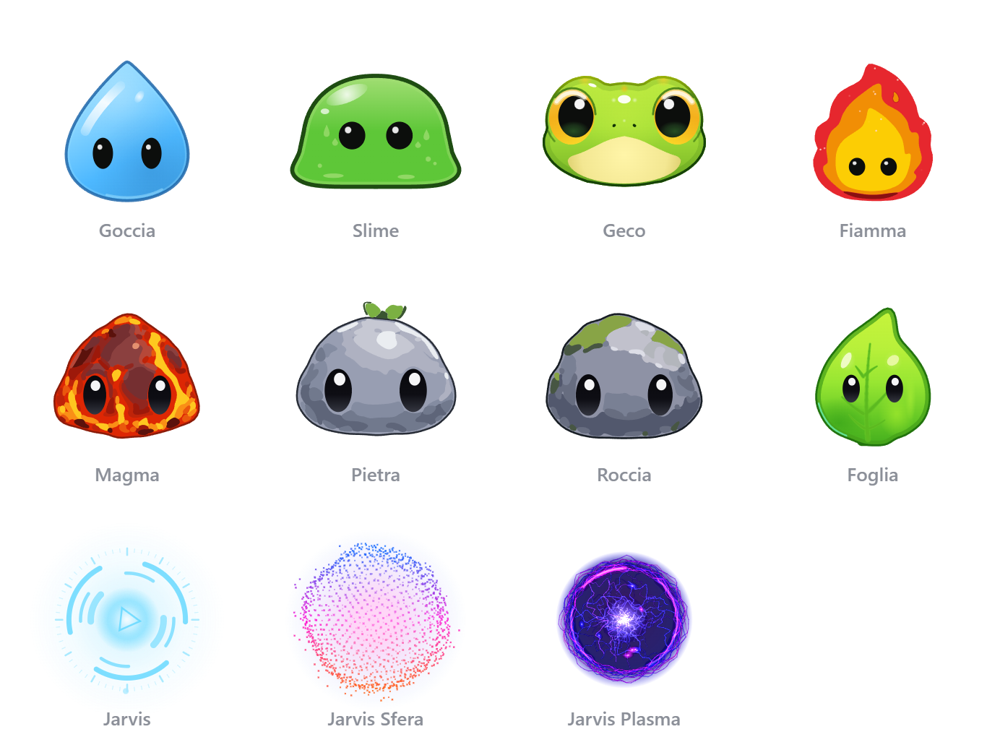

New in 1.0.0: your personal agent
EasyIsland doesn't just wait for your questions: it carries tasks forward on its own, with a plan, your tools and an AI engine of your choice for each task, asks you only what only you know (on Telegram too) and tells you when it's done. A Heartbeat checks what you ask every now and then and speaks only when needed; Skills are your own procedures in .md files. And the memory becomes a second brain: linked pages about clients, people and projects, files to learn from, a check that proposes how to tidy it and a window to explore it as a graph, mind map, concept map and timeline. Ask the chat for the feature you're missing and it becomes a custom integration: forms, dashboards, links to your services' APIs. Everything is in the guide.




One island, one menu, everything one click away
Open the island and on the left there's a menu with the character on top: Overview (every integration and agent as tiles, with their state), Agents, Chat, Actions, Files and screen and your integrations, each with its logo and a dot when there's news. At the top the character tells you what's going on in a speech bubble, and a single field searches integrations, actions and programs or, with Ctrl+Enter, asks the chat. Drag the corner and the island grows up to the screen edges.
Quick replies, with the island closed
You don't even need to open it: when an agent asks a simple permission or the phone rings, Deny / Allow or Answer / Decline appear next to the character, and during the call the duration with Mute and Hang up. Questions, plans and risky commands always open their card.


Coding agents in the island
Sessions of Claude Code, Codex, opencode, Antigravity and Gemini CLI (Cursor and Copilot too) become live cards: progress, steps, file changes in real time with lines added/removed and a Changes tab with context that opens VS Code at the right line.
- Deny / Allow / Always on permissions (with the rule proposed by the agent, or a session-only rule), answers to questions, "Later" with a countdown.
- "Finished" card with the last message in markdown and "Continue".
- "Ask this session": question a read-only copy without touching the real work.
- Daily and weekly recaps and Pro/Max plan limits shown in the island.
- The relay never blocks the agent: if the app doesn't answer, everything carries on in the terminal.


Chat with the engine you want
Claude subscription (your Pro/Max through Claude Code, no key), Anthropic API key, OpenRouter, OpenAI, Gemini, local Ollama and LM Studio models, opencode and Antigravity with tools. The chat can use the PC through EasyIsland (programs, quick actions, Notion, To Do, settings…) with Allow / Deny on everything that changes something, or work like a terminal in a folder you choose.

- Attach copied text (Ctrl+Alt+K), dropped files, images, a window or an area of the screen (Ctrl+Alt+Shift+S).
- Edit, Regenerate, Branch and Second opinion from another engine; / commands, @ attachments, assistants, dictation.
- History on this PC only, and a memory in .md files the chat remembers in every conversation.
3CX right in the PC
Pick "This PC" among the devices: EasyIsland registers as the WebRTC phone of your extension — call, answer, mute, keypad tones, ringtone, transfer and divert. Plus a real-time team, chat, voicemail with transcription, queues and history.

Quick actions, automations, any app
Links, programs, PowerShell scripts and AI prompts with global shortcuts and suggestions for the app you're using. Select text in any program, press Win+Alt+A and your actions appear at the mouse; rewrites show before/after and paste only after "Replace", keeping the formatting. "When… then…" automations created in Settings, in plain words in the chat, or suggested from your habits.


Collection: set aside, then ask
Putting a quote together and going through suppliers' sites? Select a name and a price, press Ctrl+Alt+Shift+R and they go into the Collection with their source (program, window, page address from Chrome and Edge); an area of the screen too, from Box and ask. Give it a name and the fields to work out, and Ask the chat hands it all over: the chat puts them in a table and waits for your question. It works for any job, not only quotes.
Integrations and widgets
Zammad, Outlook, Teams, Notion (with an editable mini Notion), Telegram, remote access with WinRM and SSH, Remote Desktop Manager, PC status, security, network, weather with a live sky, clipboard, media, GitHub, Vercel, Stripe, Resend, Cal.com, n8n, plus widgets for sites, certificates, domains, servers, calendars and APIs.


Ten characters, zero distractions
Goccia, Slime, Geco, Fiamma, Magma, Pietra, Roccia, Foglia, Jarvis, Jarvis Sfera and Jarvis Plasma — drawn in code, or in their place the EasyIsland logo, your own PNG logo or the weather; synthesised sounds, a Windows 11 or Classic style in light, dark or automatic mode, free position on several screens. With the island tucked away the CPU stays at ~0%.

Installation
Go to the releases, download EasyIsland-Windows-setup.exe of the latest version and run it (current user only, no administrator). The installer isn't signed yet: SmartScreen shows a warning, click More info → Run anyway. Then: notification area icon → Settings → Coding agents → Install (Claude Code) and the Chat page for the engine. Step by step in the guide.